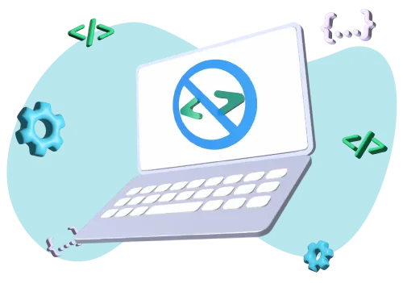

services
+41 22 539 1970
Hébergement et services cloud a GENEVE , Suisse ROMANDE
Les données sont l’un des actifs fondamentaux de toute entreprise et pas seulement, pensez à la valeur des photos de famille, par exemple. Leur archivage, Avec l’évolution des types de fichiers utilisés et du poids des fichiers eux-mêmes, elle devient de plus en plus importante. Il est nécessaire de être en mesure de les conserver à l’abri de toute perte, de les rendre disponibles pour les récupérer et de les conserver à l’abri de toute perte. utilisés à tout moment, les protégeant ainsi des attaques de pirates informatiques, des défaillances matérielles ou des accidents tels que la foudre ou les intempéries.
Chez pczug, nous savons à quel point les données, tant professionnelles que personnelles, sont importantes pour nos clients, et en plus d’assurer leur récupération efficace et sûre en cas de problème, nous nous chargeons de trouver la meilleure solution pour leur archivage. Nous sommes en mesure de garantir la sécurité des données et une excellente continuité des services, même en cas de catastrophe, avec un accès à l’information possible à tout moment, où que vous soyez.
Les services en nuage sont souvent alloués sur des serveurs numériques, auxquels il est possible d’accéder depuis différents appareils et lieux en toute sécurité et avec facilité, grâce aux données d’accès et, surtout, aux services VPN (Virtual Private Network) mis en place par nos soins, qui garantissent unhaut degré de protection, et ce uniquement via une connexion Internet.
L‘aspect sécurité est mis en œuvre par un certain nombre de services tels que l’identification à deux facteurs, le cryptage des données, l’utilisation de centres de données modernes et des sauvegardes quotidiennes, hebdomadaires et mensuelles.
pczug Cloud Backup
En protégeant vos données avec l’innovant vCLOUD d ‘pczug, vous pouvez dormir sur vos deux oreilles : vos données sont en sécurité. Incendies, décharges atmosphériques, pannes matérielles, pandémies, autant d’événements qui peuvent soudainement frapper n’importe quelle infrastructure ou entreprise.
La protection préventive sera également garantie par l’utilisation d’outils professionnels gérés par le centre de données de SwissColocation, la situation étant toujours sous contrôle.L’installation reflète toutes les certifications ISO/IEC 27001:2013, attestant du travail continu pour perfectionner ses processus internes.
Les avantages de nos solutions V-Cloud sont multiples, à commencer par le fait que les fichiers sont cryptés lors du transfert et stockés de manière certifiée, et que les données sont localisées dans des environnements autres que les environnements d’origine (avec la possibilité optionnelle d’avoir des copies de toutes les données ou services redondants dans un centre de données supplémentaire en Suisse).
Ils offrent un espace de stockage évolutif et extensible et les données peuvent être consultées, avec des identifiants confidentiels, à tout moment et à partir de n’importe quel endroit connecté à l’internet.
Les services cloud pczug, évolutifs, dotés d’un contrôle d’accès strict, d’une connexion dédiée et d’une redondance du réseau, comprennent des services VPS (Virtual Private Server Windows, Virtual Private Server Linux, IP et firewall dédiés), de l’hébergement pour héberger et stocker en toute sécurité des boîtes aux lettres, des sites Internet, des CMS WordPress, des CMS Drupal et des CMS PHP, ainsi que la sauvegarde des données Office 365, des applications veam pour sauvegarder des données, les transmettre sous forme cryptée et les chiffrer, avec une rétention variable et le choix du territoire.